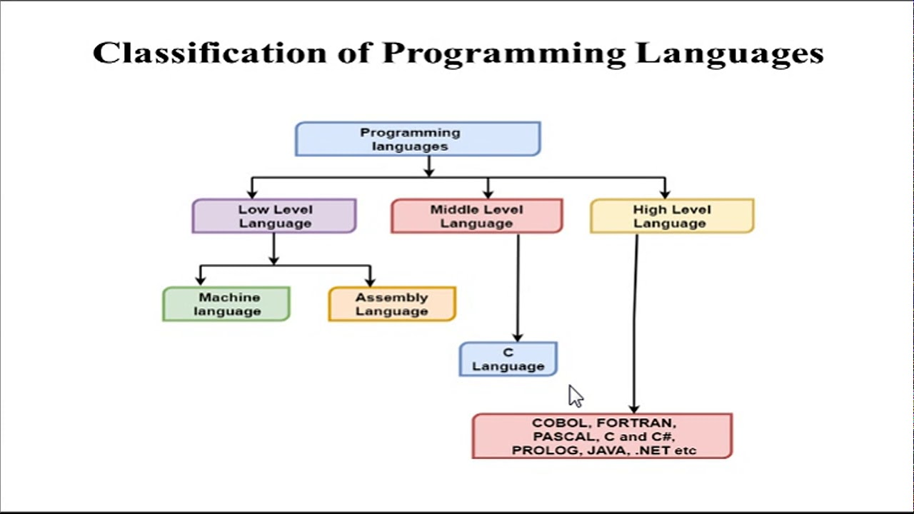

Programming languages are basically classified into two main categories – Low level language and High level language. However, there also exists another category known as Middle level language. Every programming language belongs to one of these category and sub-category.
The low-level language is a programming language that provides no abstraction from the hardware, and it is represented in 0 or 1 forms, which are the machine instructions. The languages that come under this category are the Machine level language and Assembly language.
| Machine-level language | Assembly language |
|---|---|
| The machine-level language comes at the lowest level in the hierarchy, so it has zero abstraction level from the hardware. | The assembly language comes above the machine language means that it has less abstraction level from the hardware. |
| It cannot be easily understood by humans. | It is easy to read, write, and maintain. |
| The machine-level language is written in binary digits, i.e., 0 and 1. | The assembly language is written in simple English language, so it is easily understandable by the users. |
| It does not require any translator as the machine code is directly executed by the computer. | In assembly language, the assembler is used to convert the assembly code into machine code. |
| It is a first-generation programming language. | It is a second-generation programming language. |
The high-level language is a programming language that allows a programmer to write the programs which are independent of a particular type of computer. The high-level languages are considered as high-level because they are closer to human languages than machine-level languages.
The following are the differences between low-level language and high-level language:
| Low-level language | High-level language |
|---|---|
| It is a machine-friendly language, i.e., the computer understands the machine language, which is represented in 0 or 1. | It is a user-friendly language as this language is written in simple English words, which can be easily understood by humans. |
| The low-level language takes more time to execute. | It executes at a faster pace. |
| It requires the assembler to convert the assembly code into machine code. | It requires the compiler to convert the high-level language instructions into machine code. |
| The machine code cannot run on all machines, so it is not a portable language. | The high-level code can run all the platforms, so it is a portable language. |
| It is memory efficient. | It is less memory efficient. |
| Debugging and maintenance are not easier in a low-level language. | Debugging and maintenance are easier in a high-level language. |